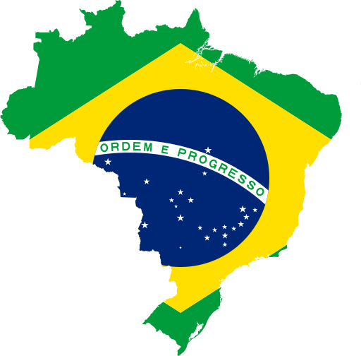

Brazil is the largest country in both South America and Latin America. Brazil is the world's fifth-largest country by area and the sixth-most populous. The capital is Brasília, and the most-populated city is São Paulo. It is the largest country to have Portuguese as an official language and the only one in the Americas. Its Amazon River basin includes a vast tropical forest, home to diverse wildlife, a variety of ecological systems, and extensive natural resources.
Brazil is the only Portuguese-speaking nation in the Americas, the official language is Portuguese, which almost all of the population speaks and is virtually the only language used in newspapers, radio, television, and for business and administrative purposes. The most famous exception to this is a strong sign language use in education and government services. Instructors and translators are recognized professionals. Schools and health services must provide access ("inclusion") to deaf people.